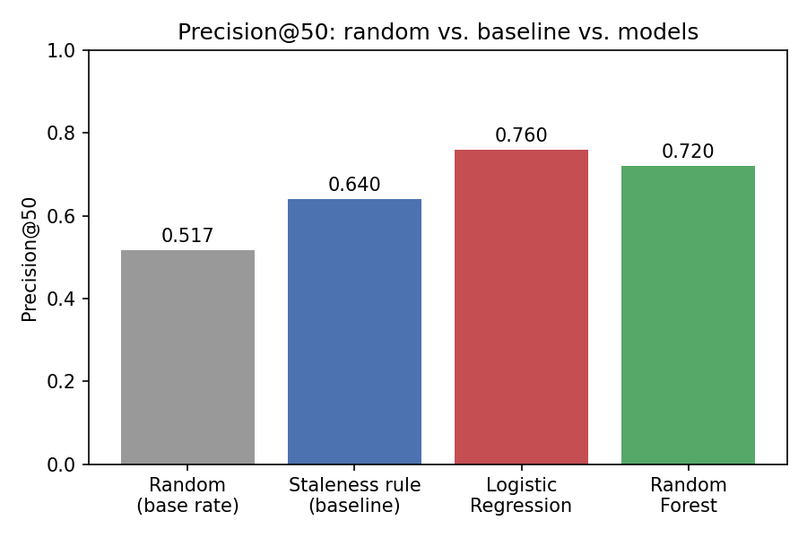
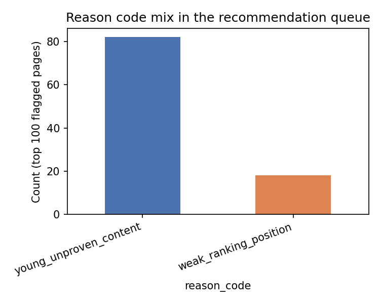

Search Intelligence Research · Refresh / Content Opportunity Scoring
This work asks whether page-level search signals — visibility, ranking position, age, and traffic pattern — can predict which pages are declining well enough to prioritize a fixed-capacity weekly review queue. Using 30,000 pseudonymized content items from the FlyRank ML Internship dataset, I trained a client-grouped, leakage-checked Logistic Regression and Random Forest against an observed 30-day decline label. Logistic Regression reached 0.76 precision@50 and Random Forest 0.72 — both clear the 0.64 staleness-rule baseline and the 0.517 base rate, with a counter-intuitive finding that most flagged pages are younger than typical, not staler. The output is a ranked, reason-coded review queue for human editors — a decision-support tool, not an automated content system.
01 — INTRODUCTION
A content team can realistically hand-review roughly 50 pages a week. Across a portfolio of thousands, the real decision isn't "is this page declining" in isolation — it's which ~50 pages does a reviewer open first. That's a ranking problem, not a classification problem, and it needs a ranking-appropriate metric.
The obvious first instinct — sort by staleness, oldest-updated first — is a real rule, not a strawman. This paper tests whether a model that combines many signals can beat that rule on the same, honestly-split data, and reports the result whichever way it lands.
02 — DATA
Release: the FlyRank ML Internship starter slice
(content_refresh_anonymized.csv) — 30,000 content items across 32
pseudonymized clients. Every metric is a trailing-90-day aggregate as of one export
snapshot; there is no per-row date, so this is a single snapshot, not a daily panel.
trend_direction, trend_pct, and the raw 30-day comparison
columns that build the label — including them as features would leak the answer back
into the model.provider_used, model_used — production details about how a
page was written, not signals about how it performs in search.03 — METHODOLOGY
Label: is_declining_label = 1 if a page's impressions fell from the
prior 30-day window to the most recent 30-day window inside the snapshot — an observed
comparison, not an invented threshold.
Features: log-transformed traffic counts, position/CTR/engagement rates, content
age and staleness, and explicit has_* missingness flags rather than blind
zero-fills, since missingness is patterned by content type, not random.
Baseline: rank purely by days since last update — a real, legitimate single-signal rule.
Validation design: a client-grouped split (no client's pages appear in both train and test), not a random row split — because this is a single snapshot with no time dimension, and a random split lets same-client patterns leak across the split. This mattered in practice: the identical model scored 0.900 precision@50 under a random split and 0.720 under the honest grouped split — an 18-point inflation from the leak.
No label-derived columns in the final feature set
No production-detail flags (provider_used, model_used) used
Confession test: deliberately adding the label-source column back in pushed precision@50 to 1.000 — confirming the exclusion logic actually works
Zero client overlap between train and test, verified directly
04 — RESULTS
Base rate on the held-out test split: 0.517 — every number below has to clear that to mean anything at all.
| Model | Precision@50 | Lift over base rate |
|---|---|---|
| Random (base rate) | 0.517 | 1.00× |
| Staleness rule (baseline) | 0.640 | 1.24× |
| Logistic Regression | 0.760 | 1.47× |
| Random Forest | 0.720 | 1.39× |

Both models clear the staleness-rule baseline. Logistic Regression — the simpler, more readable model — edges out Random Forest, reported here as the finding rather than smoothed over in favor of the more complex model.
Feature importance in the Random Forest points to consistency of visibility, overall traffic scale, ranking position, and content age as the strongest signals — plausible drivers of decline, and none suspiciously dominant enough to suggest a hidden leak.
05 — LIMITATIONS
06 — RANKED RECOMMENDATIONS
The validated model, refit on the full dataset, scores every eligible page. Each flagged page gets exactly one reason code and one recommended action — never a raw probability a reviewer has to interpret themselves.

Reason-code mix across the top 100 flagged pages: 82% young/unproven content (lower-confidence, monitor only), 18% weak ranking position (a real editorial target).
decline_score is a ranking signal, never a public claim or a certainty about any single page.Watch for: precision@50 on a rolling holdout falling toward the 0.640 baseline (model has stopped adding value); the label's base rate drifting far from ~0.52 (a portfolio-wide shock, e.g. an algorithm update); the reason-code mix shifting sharply from ~82/18; or a fixed monthly re-score cadence regardless of any signal above.
07 — REPRODUCIBILITY
Every number on this page traces back to a committed, executed notebook. Random seed fixed at 42 throughout. The full 10-notebook progression — from research question to this capstone — is public in the repository below.
→ Full repository → Capstone notebook → All weekly notebooks